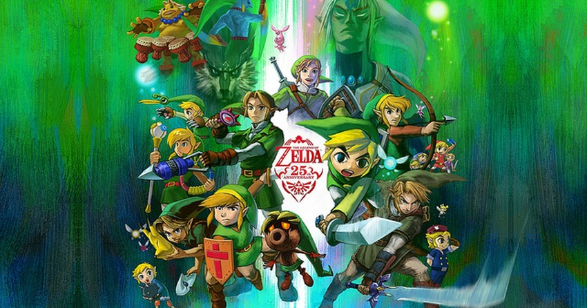
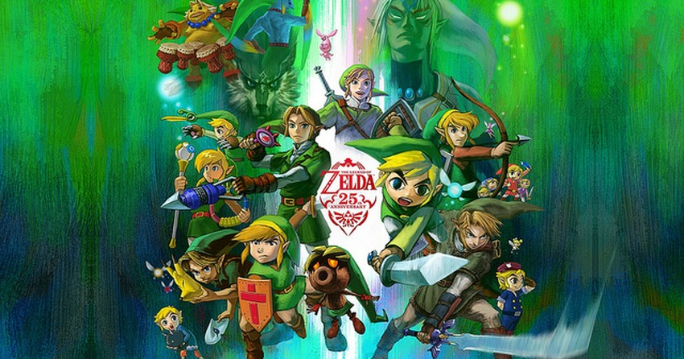

Sobre minha pessoa
Olá, meu nome é Matheus, tenho 17 anos e alguns meses de vida (Quase com 18 (ಥ﹏ಥ)). Acredito que a melhor forma de me introduzir da maneira certa é falando sobre o que gosto ( As três mais importantes), primeiramente eu amo vídeo games, desde quando eu era criança, nesta epoca eu jogava até sonic de master system. Com o tempo joguei diversos tipos de jogos e fui aperfeiçoando meus gostos por este meio. O meu genêro favorito são Jrpgs (Rpgs eletrônios feito por japoneses), mas eu também gosto bastante de action adventure, como Zelda Majora's Mask. Gosto de temas complexos sendo tratados, mas também não me importo de jogar coisas divertidas e descontraídas (Aliás outra informação extra, aprendi muito do básico de inglês jogando, logo tenho entendimento intermediário e assisto bastante vídeos sobre jogos em inglês).
 

Outra coisa que curto bastante é animes, eu assisti de quase todos os tipos (até os ruins) mas sempre gosto quando encontro uma obra com bons temas, reflexiva e com mensagens profundas. Claro que eu também curto obras menos profundas, como algumas de comédia, e até uns de romances bestas (Tem que aquecer o coração nessa pandemia (︶^︶)).
A última informação que considero talvez uma das mais importantes que você precisa saber sobre mim
, antes de ler, respire bem, inspire...
pronto..?
é a seguinte...
PÃO DE QUEIJO É MUITO BOM!!!!

Se deseja saber sobre minha comida favorita (pão de quejo não conta por ser divino) Clique aqui